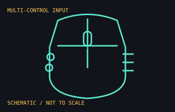

[ MICE AND TRACKBALLS // IDENTIFIED COMPONENT ]
Logitech G502 X PLUS
Wireless programmable gaming mouse in Logitech's G502 X generation, announced in 2022. The PLUS variant adds LIGHTSYNC RGB lighting to the X LIGHTSPEED platform.

MODEL IDENTIFICATION: Logitech product family G502 X PLUS; P/N 910-006160 is the black regional SKU commonly listed in the US. Other colors and regions use different suffixes; use the label and manual for exact identification.
Recorded specifications
| Switches | LIGHTFORCE hybrid optical-mechanical main switches. |
|---|---|
| Tracking | HERO 25K-class optical sensor; Logitech lists up to 25,600 DPI for the G502 X generation. |
| Connection / charge | LIGHTSPEED wireless via USB receiver; USB-C charging/data connection; POWERPLAY wireless charging compatibility. |
| Controls / lighting | 13 programmable controls and LIGHTSYNC RGB on the PLUS variant. |
| Battery estimate | Up to 130 hours with lighting off or 37 hours with default RGB, per manufacturer specifications; usage settings affect runtime. |
Compatibility and handling
- Advanced button mapping, lighting, and profiles require Logitech G HUB on a supported host. Standard pointer use requires an available USB port for the receiver.
- USB-C cable charging does not replace the LIGHTSPEED receiver as the normal wireless data link; consult the manual for wired operation and charging behavior.
- The PLUS model is larger and heavier than the G502 X LIGHTSPEED and wired G502 X; do not transfer fit or battery claims between these variants.
- Use the included DPI-shift cover that suits the user's grip and preserve the removable original part.
Manufacturer sources
- Logitech Support — G502 X PLUS specificationsModel-specific product specification including sensor, controls, lighting, and stated battery life.
- Logitech — G502 X family announcementManufacturer launch description of the wired, LIGHTSPEED, and PLUS variants and LIGHTFORCE switch generation.